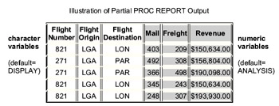

Overview
Introduction
List and summary reports are often created from SAS data. To produce a variety of reports using a single report-writing tool, you can use PROC REPORT. In addition to creating list reports, PROC REPORT enables you to
- create custom reports.
- request separate subtotals and grand totals.
- calculate columns.
- create and store report definitions.
You can use PROC REPORT in three ways:
- in a windowing mode with a prompting facility that guides you as you build a report.
- in a windowing mode without the prompting facility.
- in a nonwindowing mode. In this case, you submit a series of statements with the PROC REPORT statement, just as you do in other SAS procedures
This chapter shows you how to use PROC REPORT by submitting SAS statements. Although PROC REPORT enables you to create highly customized reports, we'll focus on basic statements and will add a few enhancements. By the end of the chapter, you'll create a list report and a summary report.
| PROC REPORT List Report | |||||
|---|---|---|---|---|---|
| Flight Number | Flight Origin | Flight Destination | Mail / Pounds | Freight / Pounds | Revenue |
| 821 | LGA | LON | 403 | 209 | $150,634.00 |
| 821 | LGA | LON | 345 | 243 | $150,634.00 |
| 821 | LGA | LON | 248 | 307 | $193,930.00 |
| 821 | LGA | LON | 391 | 395 | $167,772.00 |
| 821 | LGA | LON | 219 | 368 | $183,106.00 |
| 821 | LGA | LON | 389 | 479 | $169,576.00 |
| 821 | LGA | LON | 448 | 282 | $143,561.00 |
| 821 | LGA | LON | 403 | 209 | $170,766.00 |
| 821 | LGA | LON | 345 | 243 | $129,560.00 |
| 821 | LGA | LON | 248 | 307 | $196,736.00 |
| 821 | LGA | LON | 391 | 395 | $125,344.00 |
| 821 | LGA | LON | 219 | 368 | $166,543.00 |
| 821 | LGA | LON | 389 | 479 | $129,745.00 |
| PROC REPORT Summary Report | |||||
| Flight Number | Flight Origin | Flight Destination | Mail / Pounds | Freight / Pounds | Total Revenue |
| 821 | LGA | LON | 4,438 | 4,284 | $2,077,907.00 |
| 271 | LGA | PAR | 5,050 | 4,421 | $1,969,201.00 |
| 219 | LGA | LON | 2,700 | 2,513 | $1,111,647.00 |
Objectives
In this chapter, you learn to
- invoke the REPORT procedure and specify a windowing or nonwindowing environment.
- select columns for your report.
- define the usage for columns.
- specify attributes, options, and justification for columns.
- specify features of column headings, including split characters, underlining, and blank lines.
Creating a Default List Report
Let's start by creating a list report. Suppose you want to create a listing of mail, freight, and passenger revenue for flights between LaGuardia Airport and London or Paris.
As with other SAS procedures, you first reference the library in which your data is stored, and then you submit a basic PROC REPORT step.
General form, basic PROC REPORT step:
PROC REPORT
where
- SAS-data-set is the name of the SAS data set that is used for the report
- options includes
SAS Windowing Environment - WINDOWS or WD, which invokes the procedure in a windowing mode. Your report appears in the REPORT window. This is the default for the SAS windowing environnment.
- NOWINDOWS or NOWD, which displays a listing of the report in the OUTPUT window.
Note If you specify HTML output in your SAS preferences, then the HTML output appears in addition to or instead of the OUTPUT window listing, as requested. Some PROC REPORT formatting options are not applicable to HTML output. SAS Enterprise Guide NOWINDOWS or NOWD, which displays a listing of the report in the results window. This is the default for Enterprise Guide. Note Some PROC REPORT formatting options are not applicable to HTML output.
Example
In this program, PROC REPORT reads the Flights.Europe data set and creates a report in a nonwindowing mode.
proc report data=flights.europe nowd; run;
This is HTML output from the PROC REPORT step. Notice that by default
- all observations and variables in the data set are printed.
- Variables appear in the order in which they occur in the data set.
| Flight | Date | Depart | Orig | Dest | Miles | Freight | Boarded | Transferred | |
|---|---|---|---|---|---|---|---|---|---|
| 821 | 04MAR99 | 9:31 | LGA | LON | 3442 | 403 | 209 | 167 | 17 |
| 271 | 04MAR99 | 11:40 | LGA | PAR | 3856 | 492 | 308 | 146 | 8 |
| 271 | 05MAR99 | 12:19 | LGA | PAR | 3857 | 366 | 498 | 177 | 15 |
Selecting Variables
Now let's see how you can choose the data that you want to display.
To select and order the variables that appear in your list report, you can use the COLUMN statement.
General form, COLUMN statement:
COLUMN variable(s);
where variable(s) is one or more variable names, separated by blanks.
Example
The following COLUMN statement specifies that only the variables Flight, Orig, Dest, Mail, Freight, and Revenue be printed, in that order.
proc report data=flights.europe nowd;
column flight orig dest mail freight revenue;
run;
| Flight | Orig | Dest | Freight | Revenue | |
|---|---|---|---|---|---|
| 821 | LGA | LON | 403 | 209 | 150634 |
| 271 | LGA | PAR | 492 | 308 | 156804 |
| 271 | LGA | PAR | 366 | 498 | 190098 |
| 821 | LGA | LON | 345 | 243 | 150634 |
| 821 | LGA | LON | 248 | 307 | 193930 |
| 271 | LGA | PAR | 353 | 205 | 166470 |
| 821 | LGA | LON | 391 | 395 | 167772 |
| 271 | LGA | PAR | 366 | 279 | 163248 |
| 821 | LGA | LON | 219 | 368 | 183106 |
| 271 | LGA | PAR | 357 | 282 | 170766 |
| 821 | LGA | LON | 389 | 479 | 169576 |
| 271 | LGA | PAR | 415 | 463 | 195468 |
| 622 | LGA | FRA | 296 | 414 | 187636 |
| 821 | LGA | LON | 448 | 282 | 143561 |
| 271 | LGA | PAR | 352 | 351 | 123456 |
| 219 | LGA | LON | 331 | 376 | 189065 |
| 387 | LGA | CPH | 395 | 217 | 196540 |
| 622 | LGA | FRA | 296 | 232 | 165456 |
| 821 | LGA | LON | 403 | 209 | 170766 |
| 271 | LGA | PAR | 492 | 308 | 125632 |
| 219 | LGA | LON | 485 | 267 | 197456 |
| 387 | LGA | CPH | 393 | 304 | 134561 |
| 622 | LGA | FRA | 340 | 311 | 125436 |
| 271 | LGA | PAR | 366 | 498 | 128972 |
| 219 | LGA | LON | 388 | 298 | 162343 |
| 821 | LGA | LON | 345 | 243 | 129560 |
| 219 | LGA | LON | 421 | 356 | 134520 |
| 387 | LGA | CPH | 546 | 204 | 135632 |
| 622 | LGA | FRA | 391 | 423 | 107865 |
| 821 | LGA | LON | 248 | 307 | 196736 |
| 271 | LGA | PAR | 253 | 205 | 153423 |
| 219 | LGA | LON | 447 | 299 | 106753 |
| 387 | LGA | CPH | 415 | 367 | 128564 |
| 622 | LGA | FRA | 346 | . | 178543 |
| 821 | LGA | LON | 391 | 395 | 125344 |
| 271 | LGA | PAR | 366 | 279 | 133345 |
| 219 | LGA | LON | 356 | 547 | 122766 |
| 387 | LGA | CPH | 363 | 297 | 134523 |
| 622 | LGA | FRA | 317 | 421 | 100987 |
| 821 | LGA | LON | 219 | 368 | 166543 |
| 271 | LGA | PAR | 357 | 282 | 126543 |
| 219 | LGA | LON | 272 | 370 | 198744 |
| 387 | LGA | CPH | 336 | 377 | 109885 |
| 622 | LGA | FRA | 272 | 363 | 134459 |
| 821 | LGA | LON | 389 | 479 | 129745 |
| 271 | LGA | PAR | 415 | 463 | 134976 |
Selecting Observations
You might also want to select rows for your report based on a condition. To select observations, you can use the WHERE statement, just as you have learned to do with PROC PRINT.
Example
The following WHERE statement specifies that only observations that have the value LON or PAR for the variable Dest be printed.
proc report data=flights.europe nowd;
column flight orig dest mail freight revenue;
where dest in ('LON','PAR');
run;
| Flight | Orig | Dest | Freight | Revenue | |
|---|---|---|---|---|---|
| 821 | LGA | LON | 403 | 209 | 150634 |
| 271 | LGA | PAR | 492 | 308 | 156804 |
| 271 | LGA | PAR | 366 | 498 | 190098 |
| 821 | LGA | LON | 345 | 243 | 150634 |
| 821 | LGA | LON | 248 | 307 | 193930 |
| 271 | LGA | PAR | 353 | 205 | 166470 |
| 821 | LGA | LON | 391 | 395 | 167772 |
| 271 | LGA | PAR | 366 | 279 | 163248 |
| 821 | LGA | LON | 219 | 368 | 183106 |
| 271 | LGA | PAR | 357 | 282 | 170766 |
| 821 | LGA | LON | 389 | 479 | 169576 |
| 271 | LGA | PAR | 415 | 463 | 195468 |
| 821 | LGA | LON | 448 | 282 | 143561 |
| 219 | LGA | LON | 331 | 376 | 189065 |
| 821 | LGA | LON | 403 | 209 | 170766 |
| 271 | LGA | PAR | 492 | 308 | 125632 |
| 219 | LGA | LON | 485 | 267 | 197456 |
| 271 | LGA | PAR | 366 | 498 | 128972 |
| 219 | LGA | LON | 388 | 298 | 162343 |
| 821 | LGA | LON | 345 | 243 | 129560 |
| 219 | LGA | LON | 421 | 356 | 134520 |
| 821 | LGA | LON | 248 | 307 | 196736 |
| 271 | LGA | PAR | 253 | 205 | 153423 |
| 219 | LGA | LON | 447 | 299 | 106753 |
| 821 | LGA | LON | 391 | 395 | 125344 |
| 219 | LGA | LON | 356 | 547 | 122766 |
| 821 | LGA | LON | 219 | 368 | 166543 |
| 271 | LGA | PAR | 357 | 282 | 126543 |
| 219 | LGA | LON | 272 | 370 | 198744 |
| 821 | LGA | LON | 389 | 479 | 129745 |
| 271 | LGA | PAR | 415 | 463 | 134976 |
Defining Variables
Overview of Defining Variables
In the output that you've seen in this chapter so far, you might have noticed that PROC REPORT displays
- each data value the way it is stored in the data set.
- variable names as column headings in the report.
- a default width for the report columns.
- left-justified character values.
- right-justified numeric values.
- observations in the order in which they are stored in the data set.
| Partial PROC REPORT Output | ||||
|---|---|---|---|---|
| Flight | Orig Dest | Freight | Revenue | |
| 821 | LGA LON | 403 | 209 | 150634 |
| 271 | LGA PAR | 492 | 308 | 156804 |
You can enhance the report by
- defining how each variable is used in the report.
- assigning formats to variables.
- specifying column headings and widths.
- justifying the variable values and column headings within the report columns.
- changing the order of the rows in the report.
Using DEFINE Statements
To describe how to use and display variables in your report, you use one or more DEFINE statements. You can list DEFINE statements in any order, and you can list options (usages, attributes, and so on) in any order in a DEFINE statement.
General form, simple DEFINE statement:
DEFINE variable / <usage> <attribute(s)> <option(s)>
where
- variable is the name of the variable that you want to define.
- usage specifies how to use the variable. Valid options are ACROSS, ANALYSIS, COMPUTED, DISPLAY, GROUP, and ORDER.
- attribute(s) specifies attributes for the variable, including FORMAT=, WIDTH=, and SPACING=.
- option(s) specifies formatting options, including DESCENDING, NOPRINT, NOZERO, and PAGE.
- <justification> specifies column justification (CENTER, LEFT, or RIGHT).
- 'column-heading' specifies a label for the column heading.
Example
These DEFINE statements specify attributes, usages, options, justification, and column headings for the variables Flight and Orig.
proc report data=flights.europe nowd;
where dest in ('LON','PAR');
column flight orig dest mail freight revenue;
define flight/order descending 'Flight Number'
center width=6 spacing=5;
define orig/'Flight Origin' center width=6;
run;
In this chapter, you'll look at each of these ways of defining variables.
Defining Column Attributes
You can easily change the appearance of your PROC REPORT output by specifying attributes for variables. For example, you can select a format for data values, specify the column width, and specify the spacing between columns.
To enhance your PROC REPORT output, you'll use the following attributes.
| Attribute | Action | FORMAT=format | Assigns a SAS format or a user-defined format to the item. |
|---|---|
| SPACING=horizontalpositions | Specifies how many blank characters to leave between the selected column and the column immediately to its left. The default is 2. |
| WIDTH=column-width | Specifies the width of the column. The default column width is just large enough to handle the specified format. |
Assigning Formats
In previous chapters, you learned that formats determine how data values appear in SAS output. If you do not specify a format for a variable within the PROC REPORT step, PROC REPORT uses the format that is stored in the data set. If no format is stored in the data set, PROC REPORT uses the default format for that variable type.
To assign a format to a specific report column, use the FORMAT= attribute in the DEFINE statement for that column. You can specify any appropriate SAS format or user-defined format.
Example
The variable Revenue has no format assigned to it in the Flights.Europe data set. So in your current report, revenue values appear as shown in the example belo
| Partial PROC REPORT Output, HTML | |||||
|---|---|---|---|---|---|
| Flight | Orig Dest | Dest | Freight | Revenue | |
| 821 | LGA | LON | 403 | 209 | 150634 |
| 271 | LGA | PAR | 492 | 308 | 156804 |
| 271 | LGA | PAR | 366 | 498 | 190098 |
| 821 | LGA | LON | 345 | 243 | 150634 |
| 821 | LGA | LON | 248 | 307 | 193930 |
But suppose you want your revenue figures to be formatted with a dollar sign, commas, and two decimal places, in a total width of 15 positions. To do this, you can assign the DOLLAR15.2 format to Revenue.
proc report data=flights.europe nowd;
where dest in ('LON','PAR');
column flight orig dest mail freight revenue;
define revenue/format=dollar15.2;
run;
Here is part of the HTML output from the previous program.
| Partial PROC REPORT Output, HTML | |||||
|---|---|---|---|---|---|
| Flight | Orig Dest | Dest | Freight | Revenue | |
| 821 | LGA | LON | 403 | 209 | $150,634.00 |
| 271 | LGA | PAR | 492 | 308 | $156,804.00 |
| 271 | LGA | PAR | 366 | 498 | $190,098.00 |
| 821 | LGA | LON | 345 | 243 | $150,634.00 |
| 821 | LGA | LON | 248 | 307 | $193,930.00 |
Notice that the format supplies the dollar sign, comma, decimal point, and decimal places. However, because the HTML table column conforms to the width of its contents, assigning the format does not increase the column width beyond the length of the data values.
By contrast, the monospace SAS listing of the report does display the increased column width.
Partial PROC REPORT Output, SAS Listing
Fli Ori Des ght g t Mail Freight Revenue 821 LGA LON 403 209 $150,634.00 271 LGA PAR 492 308 $156,804.00 271 LGA PAR 366 498 $190,098.00 821 LGA LON 345 243 $150,634.00 821 LGA LON 248 307 $193,930.00
| Note | You can also use FORMAT statements with PROC REPORT. However, the DEFINE statement enables you to specify more than one column attribute at a time. Also, you can use the FORMAT= attribute to define report columns (such as statistics or computed variables) that are not data set variables. |
|---|
Specifying Column Widths
In the previous example of SAS listing output, you might have noticed that several headings were wrapped over two lines. (In HTML output, the longest cell value determines the column width, so wrapping doesn't occur.)
If a variable in the input data set doesn't have a format associated with it, then the default PROC REPORT column width is
- the variable's length for character variables.
- 9 for numeric variables.
The character variables Flight, Orig, and Dest each have a length of 3, and no format is associated with them. So 3 is their default column width.
Partial PROC REPORT Output, SAS Listing
Fli Ori Des ght g t Mail Freight Revenue 821 LGA LON 403 209 $150,634.00 271 LGA PAR 492 308 $156,804.00 271 LGA PAR 366 498 $190,098.00 821 LGA LON 345 243 $150,634.00 821 LGA LON 248 307 $193,930.00
To specify a width for columns in your report, use the WIDTH= attribute in the DEFINE statement. You can specify values from 1 to the value of the LINESIZE= system option.
The WIDTH= attribute has no effect on HTML output.
Example
To specify column widths that accommodate the column headings for Flight, Orig, and Dest, you can use the following DEFINE statements in your PROC REPORT step:
proc report data=flights.europe nowd;
where dest in ('LON','PAR');
column flight orig dest mail freight revenue;
define revenue / format=dollar15.2;
define flight/width=6;
define orig/width=4;
define dest/width=4;
run;
Now the headings appear on one line.
Partial PROC REPORT Output, SAS Listing
Flight Orig Dest Mail Freight Revenue 821 LGA LON 403 209 $150,634.00 271 LGA PAR 492 308 $156,804.00 271 LGA PAR 366 498 $190,098.00 821 LGA LON 345 243 $150,634.00 821 LGA LON 248 307 $193,930.00
Specifying Column Spacing
Another way to enhance your PROC REPORT output is to specify column spacing, which is the number of blank characters between the selected column and the column immediately to its left. The default column spacing is 2. To specify a different column spacing, use the SPACING= attribute in the DEFINE statement.
The SPACING= attribute has no effect on HTML output.
Example
In the following PROC REPORT output, no spacing has been specified. Orig and Dest have two blank characters preceding their columns.
Partial PROC REPORT Output, SAS Listing
Flight Orig Dest Mail Freight Revenue 821 LGA LON 403 209 $150,634.00 271 LGA PAR 492 308 $156,804.00 271 LGA PAR 366 498 $190,098.00 821 LGA LON 345 243 $150,634.00 821 LGA LON 248 307 $193,930.00
To specify five blank spaces before the column headings for Orig and Dest, you can use DEFINE statements as shown below in your PROC REPORT step:
proc report data=flights.europe nowd;
where dest in ('LON','PAR');
column flight orig dest mail freight revenue;
define revenue / format=dollar15.2;
define flight / width=6;
define orig / width=4 spacing=5;
define dest / width=4 spacing=5;
run;
Now the two columns display the extra spacing.
Partial PROC REPORT Output, SAS Listing
Flight Orig Dest Mail Freight Revenue 821 LGA LON 403 209 $150,634.00 271 LGA PAR 492 308 $156,804.00 271 LGA PAR 366 498 $190,098.00 821 LGA LON 345 243 $150,634.00 821 LGA LON 248 307 $193,930.00
Defining Column Headings
In addition to specifying column widths and spacing, you might want to change column headings. To define a column heading, enclose the heading text in quotation marks in the DEFINE statement.
Example
Suppose you want to label Flight as Flight Number, Orig as Flight Origin and Dest as Flight Destination. Add these column headings to the DEFINE statements, being sure to match quotation marks. You can also change the WIDTH= specifications to accommodate the new headings.
proc report data=flights.europe nowd;
where dest in ('LON','PAR');
column flight orig dest mail freight revenue;
define revenue / format=dollar15.2;
define flight / width=13'Flight Number';
define orig / width=13 spacing=5 'Flight Origin';
define dest / width=18 spacing=5 'Flight Destination';
run;
Partial PROC REPORT Output, SAS Listing
Flight Number Flight Origin Flight Destination 821 LGA LON 271 LGA PAR 271 LGA PAR 821 LGA LON 821 LGA LON
Here is HTML output from the same program.
| Partial PROC REPORT Output, HTML | |||||
|---|---|---|---|---|---|
| Flight Number | Flight Origin | Flight Destination | Freight | Revenue | |
| 821 | LGA | LON | 403 | 209 | $150,634.00 |
| 271 | LGA | PAR | 492 | 308 | $156,804.00 |
| 271 | LGA | PAR | 366 | 498 | $190,098.00 |
| 821 | LGA | LON | 345 | 243 | $150,634.00 |
| 821 | LGA | LON | 248 | 307 | $193,930.00 |
Now you have the column headings that you want. But the columns are so wide that you might prefer to split the long column headings across two lines.
Splitting Column Headings across Multiple Lines
To control how words break in column headings, you can use a split character in the column label. When PROC REPORT encounters the split character in a column heading, it breaks the heading and continues the heading on the next line. The split character itself does not appear in the heading.
To use a split character, you can do either of the following:
- Use the default slash (/) as the split character.
- Define a split character by using the SPLIT= option in the PROC REPORT statement.
Example
Suppose you want to break headings so that only one word appears on a line. Using the default slash as the split character, you can submit this PROC REPORT step. Notice that the column width has been reduced.
proc report data=flights.europe nowd;
where dest in ('LON','PAR');
column flight orig dest mail freight revenue;
define revenue / format=dollar15.2;
define flight / width=6 'Flight/Number';
define orig / width=6 spacing=5 'Flight/Origin';
define dest / width=11 spacing=5 'Flight/Destination';
run;
Or you can submit this program, which uses the SPLIT= option and produces exactly the same output:
proc report data=flights.europe nowd split='*';
where dest in ('LON','PAR');
column flight orig dest mail freight revenue;
define revenue / format=dollar15.2;
define flight / width=6 'Flight*Number';
define orig / width=6 spacing=5 'Flight*Origin';
define dest / width=11 spacing=5 'Flight*Destination';
run;
Here are both types of output from both programs.
| Partial PROC REPORT Output, HTML | |||||
|---|---|---|---|---|---|
| Flight Number |
Flight Origin |
Flight Destination |
Freight | Revenue | |
| 821 | LGA | LON | 403 | 209 | $150,634.00 |
| 271 | LGA | PAR | 492 | 308 | $156,804.00 |
| 271 | LGA | PAR | 366 | 498 | $190,098.00 |
| 821 | LGA | LON | 345 | 243 | $150,634.00 |
| 821 | LGA | LON | 248 | 307 | $193,930.00 |
Partial PROC REPORT Output, SAS Listing
Flight Flight Flight Number Origin Destination Mail Freight Revenue 821 LGA LON 403 209 $150,634.00 271 LGA PAR 492 308 $156,804.00 271 LGA PAR 366 498 $190,098.00 821 LGA LON 345 243 $150,634.00 821 LGA LON 248 307 $193,930.00
Specifying Column Justification
You might also want to specify justification for columns in your report. Remember that by default in listing output, PROC REPORT left-justifies character variables and right-justifies numeric variables. For each variable that you define, you can specify the justification option CENTER, LEFT, or RIGHT in the DEFINE statement.
Each option justifies both the formatted values of the report item within the column width and the column headings over the values.
Example
To center headings and values for Flight, Orig, and Dest, you can specify the CENTER option in your DEFINE statements as shown below:
proc report data=flights.europe nowd;
where dest in ('LON','PAR');
column flight orig dest mail freight revenue;
define revenue / format=dollar15.2;
define flight / width=6 'Flight/Number' center;
define orig / width=6 spacing=5 'Flight/Origin' center;
define dest / width=11 spacing=5 'Flight/Destination' center;
run;
Partial PROC REPORT Output, SAS Listing
Flight Flight Flight Number Origin Destination Mail Freight Revenue ---------------------------------------------- 821 LGA LON 403 209 $150,634.00 271 LGA PAR 492 308 $156,804.00 271 LGA PAR 366 498 $190,098.00 821 LGA LON 345 243 $150,634.00 821 LGA LON 248 307 $193,930.00
Enhancing the Heading's Appearance
To complete the job of enhancing headings in your list report, you can take advantage of two useful options in the PROC REPORT statement:
- HEADLINE, which underlines all column headings and the spaces between them.
- HEADSKIP, which writes a blank line beneath all column headings or after the underline if the HEADLINE option is used.
These options have no effect on HTML output.
Example
In this PROC REPORT step, the PROC REPORT statement specifies both HEADLINE and HEADSKIP.
proc report data=flights.europe nowd headline headskip;
where dest in ('LON','PAR');
column flight orig dest mail freight revenue;
define revenue / format=dollar15.2;
define flight / width=6 'Flight/Number' center;
define orig / width=6 spacing=5 'Flight/Origin' center;
define dest / width=11 spacing=5 'Flight/Destination' center;
run;
Partial PROC REPORT Output, SAS Listing
Flight Flight Flight Number Origin Destination Mail Freight Revenue -------------------------------------------------- 821 LGA LON 403 209 $150,634.00 271 LGA PAR 492 308 $156,804.00 271 LGA PAR 366 498 $190,098.00 821 LGA LON 345 243 $150,634.00 821 LGA LON 248 307 $193,930.00
Defining Variable Usage
So far, you've selected data for your list report and defined column attributes and headings. Next, let's look at a more complex PROC REPORT feature: usage for variables in your report. You've seen that you define variable usage in the DEFINE statement. Now you can see how each usage affects the layout of your report and the values that the report contains.
How PROC REPORT Uses Variables
PROC REPORT uses each variable in one of six ways (DISPLAY, ORDER, GROUP, ACROSS, ANALYSIS, or COMPUTED). By default, PROC REPORT uses
- character variables as display variables.
- numeric variables as analysis variables, which are used to calculate the SUM statistic.
Because you haven't explicitly defined any variable usages, your current list report contains only display and analysis variables:
- The character variables Flight, Orig, and Dest are display variables. Display variables don't affect the order of rows in the report. A report that contains one or more display variables has a detail row for each observation that is read from the data set. Each detail row contains a value for each display variable.
- The numeric variables Mail, Freight, and Revenue are analysis variables. Analysis variables are used to calculate a statistic (in this case, the default SUM).
In the illustration below, columns for display variables are shown in white. Columns for analysis variables are shown in gray.
Illustration of Partial PROC REPORT Output
Using Order Variables
How you use a variable in a report determines, among other things, the order of the rows in your report.
An order variable orders the detail rows in a report according to their formatted values. For example, suppose you want to see values in your list report ordered by flight number. To use Flight as an order variable, you specify the ORDER usage option in the DEFINE statement, as shown below.
proc report data=flights.europe nowd headline headskip;
where dest in ('LON','PAR');
colum n flight orig dest mail freight revenue;
define revenue / format=dollar15.2;
define flight / order 'Flight/Number' width=6 center;
define orig / width=6 spacing=5 'Flight/Origin' center;
define dest / width=11 spacing=5 'Flight/Destination' center;
run;
In the ordered output shown below, notice that PROC REPORT displays only the first occurrence of each value of an order variable in a set of rows that have the same value for all order variables.
| Flight Number |
Flight Origin |
Flight Destination |
Freight | Revenue | |
|---|---|---|---|---|---|
| 219 | LGA | LON | 331 | 376 | $189,065.00 |
| LGA | LON | 485 | 267 | $197,456.00 | |
| LGA | LON | 388 | 298 | $162,343.00 | |
| LGA | LON | 421 | 356 | $134,520.00 | |
| LGA | LON | 447 | 299 | $106,753.00 | |
| LGA | LON | 356 | 547 | $122,766.00 | |
| LGA | LON | 272 | 370 | $198,744.00 | |
| 271 | LGA | PAR | 492 | 308 | $156,804.00 |
| LGA | PAR | 366 | 498 | $190,098.00 | |
| LGA | PAR | 353 | 205 | $166,470.00 | |
| LGA | PAR | 366 | 279 | $163,248.00 | |
| LGA | PAR | 357 | 282 | $170,766.00 | |
| LGA | PAR | 415 | 463 | $195,468.00 | |
| LGA | PAR | 352 | 351 | $123,456.00 | |
| LGA | PAR | 492 | 308 | $125,632.00 | |
| LGA | PAR | 366 | 498 | $128,972.00 | |
| LGA | PAR | 353 | 205 | $153,423.00 | |
| LGA | PAR | 366 | 279 | $133,345.00 | |
| LGA | PAR | 357 | 282 | $126,543.00 | |
| LGA | PAR | 415 | 463 | $134,976.00 | |
| 821 | LGA | LON | 403 | 209 | $150,634.00 |
| LGA | LON | 345 | 243 | $150,634.00 | |
| LGA | LON | 248 | 307 | $193,930.00 | |
| LGA | LON | 391 | 395 | $167,772.00 | |
| LGA | LON | 219 | 368 | $183,106.00 | |
| LGA | LON | 389 | 479 | $169,576.00 | |
| LGA | LON | 448 | 282 | $143,561.00 | |
| LGA | LON | 403 | 209 | $170,766.00 | |
| LGA | LON | 345 | 243 | $129,560.00 | |
| LGA | LON | 248 | 307 | $196,736.00 | |
| LGA | LON | 391 | 395 | $125,344.00 | |
| LGA | LON | 219 | 368 | $166,543.00 | |
| LGA | LON | 389 | 479 | $129,745.00 |
By default, the order is ascending, but you can change it with the DESCENDING option in the DEFINE statement
proc report data=flights.europe nowd headline headskip;
where dest in ('LON','PAR');
column flight orig dest mail freight revenue;
define revenue / format=dollar15.2;
define flight / orderdescending 'Flight/Number' width=6 center;
define orig / width=6 spacing=5 'Flight/Origin' center;
define dest / width=11 spacing=5 'Flight/Destination' center;
run;
Using Group Variables
| Flight Number | Flight Origin | Flight Destination | Freight | Revenue | |
|---|---|---|---|---|---|
| 219 | LGA | LON | 2700 | 2513 | $1,111,647.00 |
| 271 | LGA | PAR | 5050 | 4421 | $1,969,201.00 |
| 821 | LGA | LON | 4438 | 4284 | $2,077,907.00 |
To summarize your data using PROC REPORT, you can define one or more group variables. A group variable groups the detail rows in a report according to their formatted values. If a report contains one or more group variables, then PROC REPORT consolidates into one row all observations from the data set that have a unique combination of values for all group variables.
To define a group variable, you specify the GROUP usage option in the DEFINE statement.
Example
If you submit the following PROC REPORT step, with Flight defined as a group variable, you get the output shown below.
proc report data=flights.europe nowd headline headskip;
where dest in ('LON','PAR');
column flight orig dest mail freight revenue;
define revenue / format=dollar15.2;
define flight / group 'Flight/Number' width=6 center;
define orig / width=6 spacing=5 'Flight/Origin' center;
define dest / width=11 spacing=5 'Flight/Destination' center;
run;
| Flight Number |
Flight Origin |
Flight Destination |
Freight | Revenue | |
|---|---|---|---|---|---|
| 219 | LGA | LON | 331 | 376 | $189,065.00 |
| LGA | LON | 485 | 267 | $197,456.00 | |
| LGA | LON | 388 | 298 | $162,343.00 | |
| LGA | LON | 421 | 356 | $134,520.00 | |
| LGA | LON | 447 | 299 | $106,753.00 | |
| LGA | LON | 356 | 547 | $122,766.00 | |
| LGA | LON | 272 | 370 | $198,744.00 | |
| 271 | LGA | PAR | 492 | 308 | $156,804.00 |
| LGA | PAR | 366 | 498 | $190,098.00 | |
| LGA | PAR | 353 | 205 | $166,470.00 | |
| LGA | PAR | 366 | 279 | $163,248.00 | |
| LGA | PAR | 357 | 282 | $170,766.00 | |
| LGA | PAR | 415 | 463 | $195,468.00 | |
| LGA | PAR | 352 | 351 | $123,456.00 | |
| LGA | PAR | 492 | 308 | $125,632.00 | |
| LGA | PAR | 366 | 498 | $128,972.00 | |
| LGA | PAR | 353 | 205 | $153,423.00 | |
| LGA | PAR | 366 | 279 | $133,345.00 | |
| LGA | PAR | 357 | 282 | $126,543.00 | |
| LGA | PAR | 415 | 463 | $134,976.00 | |
| 821 | LGA | LON | 403 | 209 | $150,634.00 |
| LGA | LON | 345 | 243 | $150,634.00 | |
| LGA | LON | 248 | 307 | $193,930.00 | |
| LGA | LON | 391 | 395 | $167,772.00 | |
| LGA | LON | 219 | 368 | $183,106.00 | |
| LGA | LON | 389 | 479 | $169,576.00 | |
| LGA | LON | 448 | 282 | $143,561.00 | |
| LGA | LON | 403 | 209 | $170,766.00 | |
| LGA | LON | 345 | 243 | $129,560.00 | |
| LGA | LON | 248 | 307 | $196,736.00 | |
| LGA | LON | 391 | 395 | $125,344.00 | |
| LGA | LON | 219 | 368 | $166,543.00 | |
| LGA | LON | 389 | 479 | $129,745.00 |
But this output looks exactly like the list output in which Flight was an order variable. What happened?
The problem with the preceding output is that your report contains display variables. As character variables, Orig and Dest are defined as display variables by default.
All of the variables in a summary report must be defined as group, analysis, across, or computed variables. This is because PROC REPORT must be able to summarize all variables across an observation in order to collapse observations. If PROC REPORT can't create groups, it displays group variables as order variables.
Revising the Report
To group data in your report, you need to define the character variables (Flight, Orig, and Dest) as group variables, as shown below:
proc report data=flights.europe nowd headline headskip;
where dest in ('LON','PAR');
column flight orig dest mail freight revenue;
define revenue / format=dollar15.2;
define flight / group 'Flight/Number' width=6 center;
define orig / group width=6 spacing=5 'Flight/Origin' center;
define dest / group width=11 spacing=5 'Flight/Destination' center;
run;
Now PROC REPORT can create groups, and your summary report displays the total mail, freight, and revenue by flight number. Remember that the default statistic for the analysis variables is SUM.
| Flight Number |
Flight Origin |
Flight Destination |
Freight | Revenue | |
|---|---|---|---|---|---|
| 219 | LGA | LON | 2700 | 2513 | $1,111,647.00 |
| 271 | LGA | PAR | 5050 | 4421 | $1,969,201.00 |
| 821 | LGA | LON | 4438 | 4284 | $2,077,907.00 |
The following table compares the effects of using order variables and group variables.
| Effect on Report | Flight Order |
Flight Group |
|---|---|---|
| Rows are ordered | yes | yes |
| Repetitious printing of values is suppressed | yes | yes |
| Rows that have the same values are collapsed | no | yes |
| Type of report produced | list | summary |
Specifying Statistics
As you saw in the previous example, the default statistic for analysis variables is SUM. However, you might want to display other statistics in your PROC REPORT output. To associate a statistic with an analysis variable, specify the statistic as an attribute in the DEFINE statement.
Here's the previous sample output, which displays the default statistic SUM for the three analysis variables:
| Flight Number |
Flight Origin |
Flight Destination |
Freight | Revenue | |
|---|---|---|---|---|---|
| 219 | LGA | LON | 2700 | 2513 | $1,111,647.00 |
| 271 | LGA | PAR | 5050 | 5050 | $1,969,201.00 |
| 821 | LGA | LON | 4438 | 4438 | $2,077,907.00 |
By specifying MEAN in the DEFINE statement for Revenue, you can display the average revenue for each flight number. The optional column heading Average Revenue clarifies that the MEAN statistic is displayed.
proc report data=flights.europe nowd headline headskip;
where dest in ('LON','PAR');
column flight orig dest mail freight revenue;
define revenue / mean format=dollar15.2 'Average/Revenue';
define flight / group 'Flight/Number' width=6 center;
define orig / group width=6 spacing=5 'Flight/Origin' center;
define dest / group width=11 spacing=5 'Flight/Destination' center;
run;
| Flight Number |
Flight Origin |
Flight Destination |
Freight | Revenue | |
|---|---|---|---|---|---|
| 219 | LGA | LON | 2700 | 2513 | $158,806.71 |
| 271 | LGA | PAR | 5050 | 4421 | $151,477.00 |
| 821 | LGA | LON | 4438 | 4284 | $159,839.00 |
You can use the following statistics in PROC REPORT.
| Statistic | Definition |
|---|---|
| CSS | Corrected sum of squares |
| USS | Uncorrected sum of squares |
| CV | Coefficient of variation |
| MAX | Maximum value |
| MEAN | Average |
| MIN | Minimum value |
| N | Number of observations with nonmissing values |
| NMISS | Number of observations with missing values |
| RANGE | Range |
| STD | Standard deviation |
| STDERR | Standard error of the mean |
| SUM | Sum |
| SUMWGT | Sum of the Weight variable values |
| PCTN | Percentage of a cell or row frequency to a total frequency |
| PCTSUM | Percentage of a cell or row sum to a total sum |
| VAR | Variance |
| T | Student's t for testing the hypothesis that the population mean is 0 |
| PRT | Probability of a greater absolute value of student's t |
Using Across Variables
So far, we've looked at display, analysis, order, and group variables. You can also define variables as across variables, which are functionally similar to group variables. However, PROC REPORT displays the groups that it creates for an across variable horizontally rather than vertically.
Let's look at an example of across variables to clarify this usage.
Example
The following program uses group variables to produce the output shown. The table shows unique combinations of values of the group variables, and sums of each analysis variable for each combination.
proc report data=flights.europe nowd headline headskip;
where dest in ('LON','PAR');
column flight dest mail freight revenue;
define revenue / format=dollar15.2;
define flight / group 'Flight/Number' width=6 center;
define dest / group width=11 spacing=5 'Flight/Destination' center;
run;
| Flight Number |
Flight Destination |
Freight | Revenue | |
|---|---|---|---|---|
| 219 | LON | 2700 | 2513 | $1,111,647.00 |
| 271 | PAR | 5050 | 4421 | $1,969,201.00 |
| 821 | LON | 4438 | 4284 | $2,077,907.00 |
Now let's suppose you change the group variables to across variables, as in this program.
proc report data=flights.europe nowd headline headskip;
where dest in ('LON','PAR');
column flight dest mail freight revenue;
define revenue / format=dollar15.2;
define flight / across 'Flight/Number' width=6 center;
define dest / across width=11 spacing=5 'Flight/Destination' center;
run;
In this case, for each across variable, the table cells contain a frequency count for each unique value. For each analysis variable, the table cells represent the sum of all the variable's values.
| Flight Number | Flight Destination | ||||||
|---|---|---|---|---|---|---|---|
| 219 | 271 | 821 | LON | PAR | Freight | Revenue | |
| 7 | 13 | 13 | 20 | 13 | 12188 | 11218 | $5,158,755.00 |
Using Computed Variables
The last type of variable usage is reserved for computed variables, which are numeric or character variables that you define for the report. They are not in the input data set, and PROC REPORT doesn't add them to the input data set. You can't change the usage of a computed variable.
In the nonwindowing environment, you add a computed variable as follows:
- Include the computed variable in the COLUMN statement.
- Define the variable's usage as COMPUTED in the DEFINE statement.
- Compute the value of the variable in a compute block that is associated
| Warning | The position of a computed variable is important. PROC REPORT assigns values to the columns in a row of a report from left to right. Consequently, you can't base the calculation of a computed variable on any variable that appears to its right in the report. |
|---|
Let's see how you create a new variable for your report.
Example
Suppose you want to determine the number of empty seats for each flight. To do so, you can compute the variable EmptySeats by subtracting the number of passengers deplaning (Deplaned) from the plane's total seats (Capacity), assuming that the plane is full.
In the following program, you
- specify EmptySeats in the COLUMN statement to the right of the variables that are used in its calculation.
- define EmptySeats as a computed variable in a DEFINE statement.
- begin a compute block by specifying EmptySeats in a COMPUTE statement.
- use DATA step statements in the compute block to calculate the values of EmptySeats. Notice that when you refer to an analysis variable, you use a compound name that identifies both the original variable and the statistic that PROC REPORT now calculates from it. The compound name has the form variable-name.statistic.
- close the compute block with an ENDCOMP statement.
proc report data=flights.europe nowd; where dest in ('LON','PAR'); column flight capacity deplaned emptyseats; define flight / width=6; define emptyseats/computed 'Empty Seats'; compute emptyseats; emptyseats=capacity.sum-deplaned.sum; endcomp; run;The program creates the following output.
Flight Capacity Deplaned Empty
Seats821 250 222 28 271 250 163 87 271 250 227 23 821 250 222 28 821 250 158 92
Summary
Text Summary
Creating a Default List Report
To create a default list report, you submit a basic PROC REPORT step. You can specify options to invoke the procedure in either a windowing or nonwindowing mode. By default, all observations and variables in the data set are printed, and variables appear in the order in which they occur in the data set.
Selecting Variables
To select and order the variables that appear in your list report, you can use the COLUMN statement.
Selecting Observations
To select rows for your report, you can use the WHERE statement as you do with many other SAS procedures.
Defining Variables
You can enhance your report by defining how each variable is used in the report. To describe how to use and display variables in your report, you use one or more DEFINE statements.
Defining Column Attributes
To assign a format to a specific report column, use the FORMAT= attribute in the DEFINE statement for that column. To specify a width for columns in your report, use the WIDTH= attribute in the DEFINE statement. To specify a different column spacing, use the SPACING= attribute in the DEFINE statement. To define a column heading, enclose the heading text in quotation marks in the DEFINE statement. To control how words break in column headings, you can use a split character in the column label. For each variable that you define, you can specify the justification option CENTER, LEFT, or RIGHT in the DEFINE statement.
Enhancing the Heading's Appearance
To enhance headings in your report, you can use the HEADLINE option, which underlines all column headings and the spaces between them, and the HEADSKIP option, which writes a blank line before the data values. These options have no effect on HTML output.
Defining Variable Usage
PROC REPORT uses each variable in one of six ways (DISPLAY, ORDER, GROUP, ACROSS, ANALYSIS, or COMPUTED). By default, PROC REPORT uses character variables as display variables, and it uses numeric variables as analysis variables, which are used to calculate the SUM statistic. You can define usage for variables in the DEFINE statement.
| Variable Usage in PROC REPORT | |
|---|---|
| Display variables | do not affect the order of rows in the report. A report that contains one or more display variables has a detail row for each observation in the data set. Each detail row contains a value for each display variable. By default, PROC REPORT treats all character variables as display variables. |
| Order variables | order the detail rows in a report according to their formatted values. |
| Group variables | order the detail rows in a report according to their formatted values. If a report contains one or more group variables, PROC REPORT tries to consolidate into one row all observations from the data set that have a unique combination of values for all group variables. |
| Across variables | are functionally similar to group variables; however, PROC REPORT displays the groups that it creates for an across variable horizontally rather than vertically. |
| Analysis variables | are used to calculate a statistic. By default, PROC REPORT uses numeric variables as analysis variables, which are used to calculate the SUM statistic. |
| Computed variables | are variables that you define for the report. They are not in the data set. You cannot change the usage of a computed variable. Computed variables can be either numeric or character variables. |
Specifying Statistics
To associate a statistic with an analysis variable, specify the statistic as an attribute in the DEFINE statement.
Points to Remember
- You can use PROC REPORT in either a windowing or nonwindowing mode.
- You can use FORMAT statements with PROC REPORT, but the DEFINE statement enables you to specify more than one column attribute at a time.
- For HTML output, the FORMAT= option cannot increase cell width beyond the width of cell values. The WIDTH= and SPACING= attributes, along with the HEADSKIP and HEADLINE options, have no effect on HTML output.
- You can use the default slash as the split character, or you can specify a split character using the SPLIT= option in the PROC REPORT statement.
- By default, PROC REPORT uses character variables as display variables and numeric variables as analysis variables, which are used to calculate the SUM statistic.
- All of the variables in a summary report must be defined as group, analysis, across, or computed variables. If PROC REPORT can't create groups, it displays group variables as order variables.
- You can't change the usage of a computed variable.
- The position of a computed variable is important. You can't base the calculation of a computed variable on any variable that appears to its right in the report.